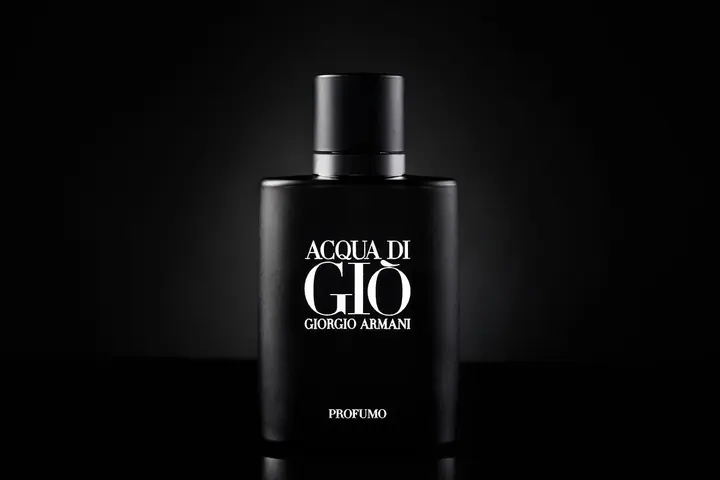
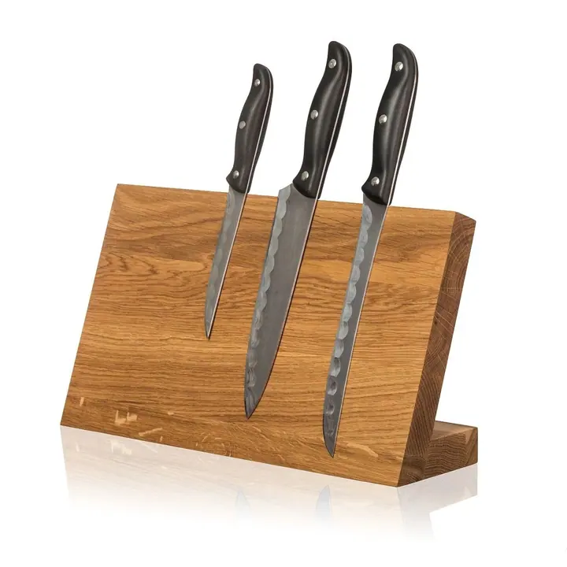
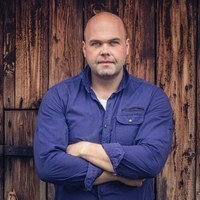

01 / 04
Produktová fotografie
Produktové fotografie přizpůsobené e-shopům, katalogům i marketingovým kampaním. Fotím i gastro, tedy jídla, nápoje a kuchařský proces pro restaurace a food značky.
Zeptat se na termín→



Fotografie lidí, značek a příběhů
Zeptat se na termín →(01) Ahoj
Jmenuji se Ladislav Káňa a jsem fotograf z Havířova, který fotí hlavně v Ostravě a okolí. Fotím produkty , firemní akce a konference i svatby . Miluji kvalitní fotky vyladěné do posledního detailu a poctivě odvedenou práci.
(02) Co fotím
01 / 04
Produktové fotografie přizpůsobené e-shopům, katalogům i marketingovým kampaním. Fotím i gastro, tedy jídla, nápoje a kuchařský proces pro restaurace a food značky.
Zeptat se na termín→02 / 04
Svatební den beru jako reportáž od příprav přes obřad až po večerní oslavu. Pracuji nenápadně a dávám prostor opravdovým emocím.
Zeptat se na termín→03 / 04
Fotím konference, firemní akce, plesy, koncerty i sportovní utkání. Fotky podtrhnou kvalitu a atmosféru vaší akce.
Zeptat se na termín→Dále nabízím
Portréty jednotlivců i kolektivů pro web, firemní prezentaci a PR, ale i osobní a rodinné focení. Fotit můžeme v mém ateliéru, venku nebo u vás ve firmě.
↗(04) Postup
Od první zprávy po hotovou galerii.
Krok 1 z 4
Napište mi nebo zavolejte, co potřebujete nafotit. U svatby uveďte hlavně datum, místo a vaši představu.
Krok 2 z 4
Společně projdeme harmonogram, místa a důležité momenty. Díky tomu vím, kdy být ve správný čas na správném místě.
Krok 3 z 4
Pracuji převážně reportážně a nenápadně. Když je potřeba, jemně vás navedu, ale vždy s respektem k atmosféře.
Krok 4 z 4
Fotky pečlivě upravím a v dohodnutém termínu je dostanete v online galerii ke stažení a sdílení, připravené na web i do tisku.
Fotografie, které pomáhají prodávat.
(05) Za objektivem
Narodil jsem se v roce 1978 v Havířově a po vysoké škole jsem se začal fotografii věnovat naplno. Prošel jsem řadou workshopů a seminářů u nás i v zahraničí a z koníčku se postupně stala práce, která mě naplňuje dodnes. Fotím přes patnáct let.
Pro firmy se pečlivě připravím a snažím se porozumět vašemu byznysu. Vytvářím fotografie, které respektují identitu vaší značky a pomáhají prodávat: produkty pro e-shopy, portréty pro web, interiéry, provozy i reportáže z akcí. Zakládám si na pečlivé postprodukci, aby fotky obstály i s odstupem času.
Na svatbách jsem spíš tichý pozorovatel. Nezasahuji do dění, nevytvářím zbytečný stres a dávám prostor opravdovým emocím. Rád vás předem poznám a domluvíme se na stylu, který vám bude blízký. Fotit můžeme také v mém ateliéru na Palackého ulici v Havířově.

Ladislav
Ladislav Káňa · Firemní, produktový a svatební fotograf
Nejlépe e-mailem. Oblíbené termíny se plní třeba rok či dva dopředu, proto se ozvěte s předstihem.
Balíček Basic začíná od 8 000 Kč za 2 až 3 hodiny focení, Standard od 17 900 Kč a Premium od 26 900 Kč. Rád vám sestavím i balíček přímo na míru.
U svateb je doprava do 50 km v ceně. U ostatního focení účtuji 10 Kč/km, pokud se fotí dál než 15 km od ateliéru.
V mém ateliéru v Havířově, v domluveném exteriéru nebo přímo u vás či ve vaší firmě. V Ostravě mám k dispozici i krásné prosvětlené prostory.
Svatebním klientům zdarma půjčuji INSTAX mini, k portrétům si můžete přiobjednat vizážistku. Firmám nabízím i krátká videa a virtuální prohlídky.
(07) Kontakt
Napište pár vět o tom, co si představujete, a termín, který se vám hodí.